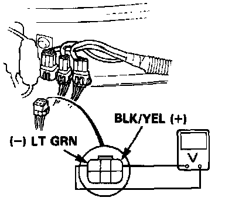
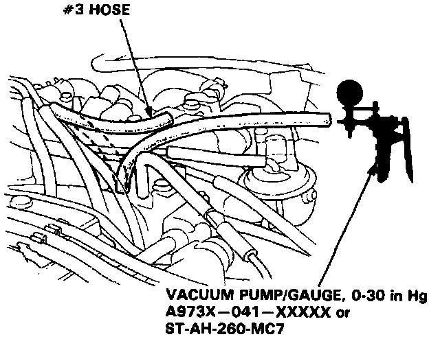
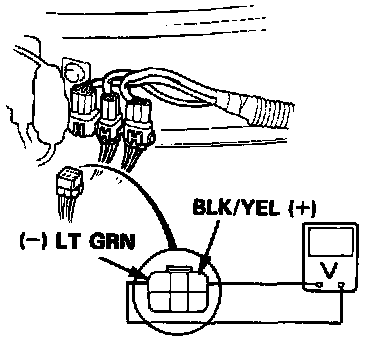

Fuel Pressure Control Solenoid: Testing and Inspection
PRESSURE REGULATOR SOLENOID VALVE TESTSTest I:
NOTE:
- Engine coolant temperature must be above 105°C (221°F).
- Intake air temperature must be above 80°C (176°F).

1. Disconnect 6P connector, then attach the positive probe of the voltmeter to BLK/YEL terminal and the negative probe to LT GRN terminal.
- If there is voltage, replace the solenoid valve and retest.
- If there is no voltage, attach the positive probe of the voltmeter to BLK/YEL terminal and the negative probe to body ground within one minute after restart.
- If there is no voltage, repair open circuit in BLK/YEL wire between the solenoid valve and No. 9 (10A) fuse.
- If there is voltage, check for an open circuit in LT GRN wire between the solenoid valve and the ECU. If wire is OK, substitute a known-good ECU and retest. If symptom goes away, replace the original ECU.
Test II:
1. Start the engine.

2. Disconnect the #3 vacuum hose from the intake manifold and check the vacuum.
- If there is no vacuum, check the vacuum port.
- If there is vacuum, check the vacuum line for proper connection, cracks, blockage or disconnected hose. If the vacuum line is OK, reconnect the #3 vacuum hose.
3. Disconnect the 6p connector.

4. Attach the positive probe of the voltmeter to BLK/YEL terminal and the negative probe to LT GRN terminal.
- If there is voltage, check for a short in LT GRN wire between the solenoid valve and ECU. If wire is OK, substitute a known-good ECU and retest. If symptom goes away, replace the original ECU.
- If there is no voltage, replace the solenoid valve and retest.